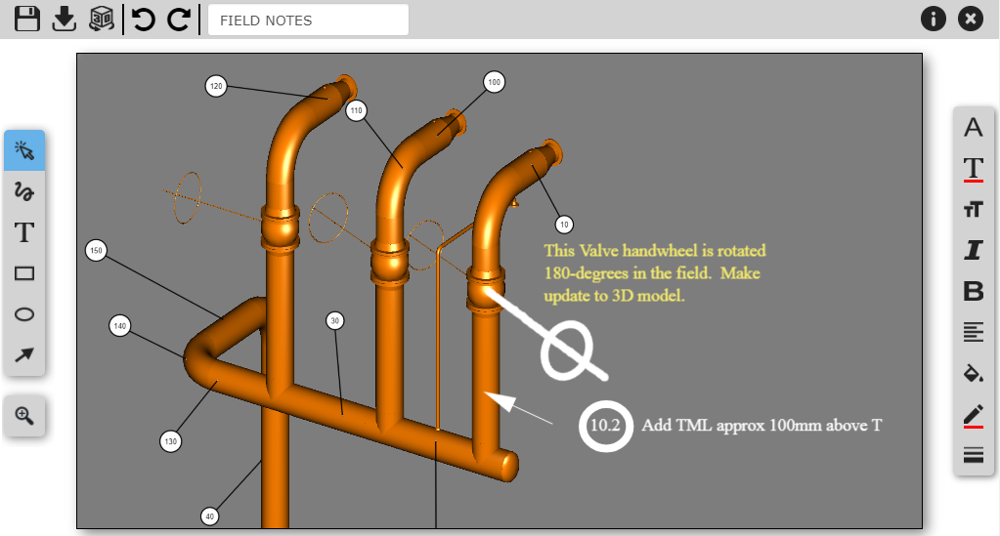
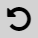
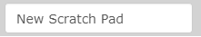
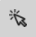

スクラッチパッドページエディタ
スクラッチ パッド ページ エディタを使用すると、既存または新しいスクラッチ パッド ページを編集できます。

スクラッチパッドページヘッダーツールバー
スクラッチ パッド ページ ヘッダー ツールバーには次の機能があります。
| 保存- スクラッチ パッド ページを保存します。 |
| ダウンロード- 現在の注釈を含むスクラッチ パッド ページをダウンロードします。このページは、 PNG画像またはPDFドキュメントとしてダウンロードできます。エクスポートされた PDF ドキュメントのレイアウトは、[PDF へのエクスポート オプション]フォームを使用してカスタマイズできます。 |
| 3D に移動- スクラッチ パッド ページを閉じ、Knowledge Bookビューアのビューをスクラッチ パッド ページが作成されたのと同じ位置に変更します。 |
 | 元に戻す -注釈の作成、変更、または削除の操作を元に戻します。 |
やり直し -やり直し 注釈の作成、変更、または削除アクション。アクションをやり直すことができるのは、アクションを元に戻した後でのみです。 | |
 | スクラッチ パッド ページ名- スクラッチ パッド ページの名前。名前を空にすることはできません。 |
| 変更履歴の表示- スクラッチ パッド ページがいつ、誰によって作成されたかを示すダイアログ ボックスを表示します。スクラッチ パッド ページが最後にいつ変更されたか、誰が変更したかも表示されます。 |
終了- スクラッチ パッド ページを終了し、前に開いたページに戻ります。 |


スクラッチパッドページ描画モードツールバー
スクラッチ パッド ページ描画モード ツールバーには次の機能があります。
 | 選択- エディター起動時のデフォルトモード。すでに作成されている注釈を選択するために使用されます。 |
| Free Draw - 自由に線を描くことができます。このモードでは連続描画が可能です。 |
| テキスト- テキストを作成できます。テキストが作成されると、選択モードに切り替わります。 |
| 長方形- 長方形を作成できます。長方形が作成されると、モードが選択に切り替わります。 |
| 楕円- 楕円を作成できます。楕円が作成されると、モードが選択に切り替わります。 |
| 矢印- 矢印を作成できます。矢印が作成されると、モードが選択に切り替わります。 |


スクラッチパッドページビュープロパティツールバー
スクラッチ パッド ページ ビューのプロパティ ツールバーには次の機能があります。
| ズーム-スクラッチ パッド ページをズームイン/ズームアウトできます。ズームは、この機能をクリックすると表示されるスライダーによって行われます。 |

スクラッチパッドページ編集ツールバー
スクラッチ パッド ページ編集ツールバーには次の機能があります。
| フォント ファミリー- 使用するフォントを選択できます。デフォルトは Times New Roman です。 |
| フォントの色- テキストの色を変更できます。デフォルトは赤です。 |
| テキスト サイズ- テキストのサイズを変更できます。デフォルトは 30 です。最大値は 100 です。 |
| 斜体- テキストを斜体に変更できます。 |
| 太字- テキストを太字に変更できます。 |
| テキストの配置- テキストの配置を右、左、中央、両端揃えに変更できます。デフォルト値のままです。 |
| 塗りつぶしの色- テキスト ブロックと図形の背景の色を変更できます。デフォルトの色は透明です。 |
線の色- 図形の境界線の色、または矢印と自由描画モードの線の色を変更できます。デフォルト値は赤です。 | |
| 線の幅- 図形の境界線のサイズ、または矢印および自由描画モードの線の幅を変更できます。デフォルト値は 2 です。最大値は 10 です。 |


注釈が選択されていないときにオプションの値を変更すると、デフォルト値が変更されます。注釈が選択されているときに値を変更すると、選択した注釈のみが変更されます。 |
関連項目:スクラッチパッドの設定
ズーム
ズーム機能を使用すると、スクラッチ パッド ページに詳細な注釈を簡単に描画できます。ズーム機能の範囲は 100% (デフォルト表示) ～ 400% です。
ズーム スライダー コントロールを使用する以外に、マウスまたはタッチ スクリーンを使用してズームイン/ズームアウトすることもできます。
ねずみ
- スクロール ホイールを使用してズームイン/ズームアウトします。
- マウスの中ボタンを押したままマウスを移動と、拡大ビューがパンされます。
タッチスクリーン
- ズームインするには 2 本指 - ピンチアウトジェスチャを使用し、ズームアウトするには2 本指 - ピンチインジェスチャを使用します。
- ズームイン ビューをパンするには、 2 本指 - スワイプジェスチャを使用します。
- タッチ スクリーン ジェスチャの詳細については、 「ビューア ナビゲーション」ページを参照してください。